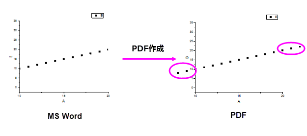

FAQ-814 MS WordからPDFを作成する際、データがグラフの軸を超えて広がってしまいます。どのようにしたら、きれいに表示できますか？
Data_Outside_Graph_Axes_Using_MS_Word_PDFMaker
最終更新日:2021/6/4
例えば、
- グラフの軸スケールを小さくする場合、軸ダイアログのスケールタブで、開始と終了を変更するか、「プロット操作・オブジェクト作成」ツールバーのスケールインを使います。
- 「CTRL+J」を押して(編集: ページコピー)、グラフをコピーします。
- MS Wordで形式を選択して貼り付けを選択して、画像として貼り付けます。(Windowsメタファイルか拡張メタファイル)
- MS Word PDFMakerを使って、この文書のPDFを作成すると、
以下のようになります。

この問題を解決するには、
- メニューの環境設定：システム変数を選択します。
- システム変数@GDIPを0に設定します。
- Originで「CTRL+J」を押して、「WMF」か「EMF」ファイルをWordに張り付けて、PDFMakerでPDFを作成します。
キーワード:PDF, EMF, WMF, PDFMaker, 形式を選択して貼り付け画像, グラフエクスポート, クリップ